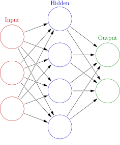

I wrote my first neural network training from scratch in Python
Recently, I decided to learn more about Machine Learning (ML). My motivation behind this was that when I browsed developer job posts, I found ML tasks the most interesting. Somehow fronted, backend, full-stack developer jobs don’t call my attention that much. I was also interested in embedded system development but it seems that my experience is too shy on that topic, ML on the other hand mainly needs math, mainly linear algebra knowledge. To track my learning better (and to know what to actually learn), I started to use https://roadmap.sh/machine-learning, which is a flowchart-like guide to learn ML.
I’ve seen many lectures, seminars, talks about how a neural network works and it seemed fairly simple after some time. The basic idea is that there is a numerical input, a vector of numbers for which we want to find a function that gives the output closest to what we expect (training data). This can be written as $\mathbf{y} = f(\mathbf{x}),$ where $\mathbf{x}$ is the input vector and the $\mathbf{y}$ is the output vector and $f$ is a composite function that models a neural network, such as the one below.

The idea is that the activation of the hidden layer ($\mathbf{A}^{(1)}$) is calculated by a linear transformation ($\mathbf{w}$) from the input layer and by adding a bias ($\mathbf{b}$) , then an activation function ($\sigma(\mathbf{x})$) is applied to introduce some nonlinearity $\mathbf{A}^{(1)} = \sigma(\mathbf{w}_{10}\mathbf{x} + \mathbf{b}^{(1)})$. Here the super- and subscripts refer to the layer index going from 0 to 2, where the input and output are $\mathbf{A}^{(0)} = \mathbf{x}$ and $\mathbf{y} = \mathbf{A}^{(2)}$. $\sigma(\mathbf{x})$ is usually either a ReLU or sigmoid function. Overall the function $f$ can be written as
$$\mathbf{y} = f(\mathbf{x}) = \sigma(\mathbf{w}_{21}\mathbf{A}^{(1)} + \mathbf{b}^{(2)}) = \sigma(\mathbf{w}_{21}\sigma(\mathbf{w}_{10}\mathbf{x} + \mathbf{b}^{(1)}) + \mathbf{b}^{(2)}).$$To train the model, we need to find the optimal weights $\mathbf{w}_{ij}$ and biases $\mathbf{b}^{(l)}$. That is done by finding the gradient of $f$ with respect to $\mathbf{w}_{ij}$ and $\mathbf{b}^{(l)}$ with a method called backpropagation and minimizing a loss function by gradient descent. Backpropagation is basically done by calculating the derivatives by the chain rule. I did the calculation by hand using index calculation. The calculation requires quite some attention but it was rewarding to succeed (I used https://towardsdatascience.com/understanding-backpropagation-abcc509ca9d0/ as a guide). Of course the network can be made more complicated by adding more hidden layers.
Following the 3Blue1Brown deep learning video, I (hand-)coded a python script that trains a model to recognize handwritten digits, using the popular MNIST example dataset. To my surprise, the whole code fit into ~150 lines.
The nice thing about implementing a neural network ML from scratch is that I could understand the backward propagation deeper and also I could get some debugging experience. What I mean by the latter is that when I managed to get rid of all the bugs that prevented the code from running, I got a 9.8% accuracy. That means, the model was just as good as random guessing… Using the python -m pdb debugger, I found out that my output layer activation was always [1.0, 1.0, ..., 1.0], which meant that the probability of each digit was 1 (I used a sigmoid as an activation function for the last layer). Then I started to work backwards to find where things go south and it turned out that my gradient became exactly zero due to very large input numbers in its argument. To resolve this issue, I just tried to set my initial weights and biases to random numbers between -0.5 and 0.5, instead of the previous [0; 1] interval. And that was it! After running the training for a few epochs and tweaking here and there, I could get a 95-97% accuracy on predicting the handwritten digits on the test dataset.
Later I found out that this was a commonly known issue called vanishing gradient problem.
The source code can be found in this repo.